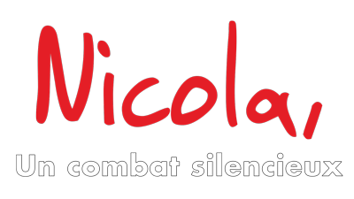
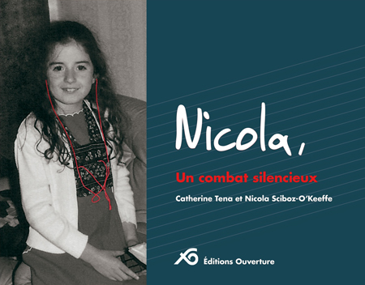

Livre de Nicola, un combat silencieux avec le soutien de l'association C'est un signe
Publié le 20 juillet 2017
Wordpress

C'est le projet qui présente un recueil de récits de vie qui est une approche qui amène une autre façon de se dire, de penser sa vie dans la rencontre avec l'autre ; il s'agit de « Nicola, un combat silencieux ». J'ai photographié les photos chez l'imprimerie d'Atelier Grand SA à Mont-sur-Lausanne pour afficher la galerie sur le site du "Nicola, un combat silencieux" à cet adresse : livre.cestunsigne.ch.
Si vous intéressez le livre "Nicola, un combat silencieux" ?

N'hésitez plus commander à cet adresse : Boutique des Éditions Ouverture
.
- Lien obsolète : livre.cestunsigne.ch
- Client : Nicola Sciboz-O’Keeffe et Catherine Tena
- Création du site : 12 novembre 2016
- Système du site : Photographie
- Association clôturée : Suite à la décision de l'assemblée générale et du comité, il a été décidé que l'association serait clôturée au 31 décembre 2023. Ce site faisait partie de l'hébergement de cestunsigne.ch. Suite à la demande du comité, les auteures ont choisie de supprimer le site.